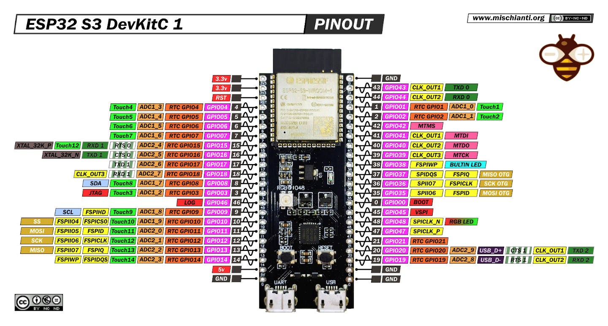
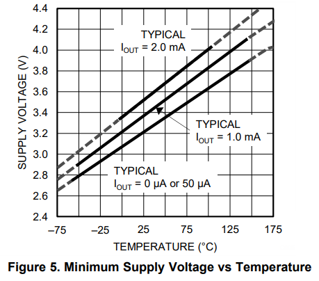

Esla diferents microcontroladors tenen en commú els següents aspectes:
PWM significa modulació de l'ample de banda, en anglès Pulse Width Modulation i és una forma d'aconseguir una sorida analògica a partir de diverses sorides digitals, molt ràpides.
PWM es representa amb el símbol "~" tal com podem verure en la imatge següent d'un Arduino Uno

Més amunt podem veure que els pins números 3, 5, 6, 9, 10 i 11.
Aquests PWM són sortides analògiques de 8 bits, en el cas de Arduino Uno Rev3 d'acord amb el fabricant, mentres que en el cas d'arduino Uno Rev4 és de 12 bits segons el fabricant que l'anomena DAC, que vol dir Digital Analog Converter
Tenir 8 o 12 bits en un convertidor digital analògic o DAC (Digital Analog Converter) tipus PWM fa que tinguem 28 o 212 nivells de diferents de corrent, es a dir 256 nivells diferents 2048 nivells diferents
Suposem que tant Arduino Uno Rev3 o Rev4 poden donar 5V com a màxim. Quina seria la resolució en minivolts en cada Ardunio?
5 volts dividit entre 256 dona 0,01953125 volts=19,53125 milivolts per Arduino Uno Rev3
5 volts dividit entre 2048 dona 0,00244140625 volts=2,44140625 milivolts per Arduino Uno Rev4
Els milivolts anterior són la resolució que aconseguim. Imaginem que volem regular la intensitat d'un LED amb un Arduino Uno Rev3 aconseguim menys fluid i amb graons més grans, es a dir canvis més bruscs perque 256 canvis són menys que 2048 volts. A continuació veurem una imatge que repreenta com combinant moltes senyals digitals ràpidament sembla que generem un senyal analògic, aixo és la base del PWM.

Quan major és l'amplada del pols vol dir que major és el temps que la sortida digital està en voltatge alt, per exemple 5V i menys temps està a 0V, i per tant el promig de tots els polsos és més alt. En canvi si per exemple si cada pols és més estret a 5V vol dir que estarà més temps a 0V, i per tant el promig de tots els polsos és més baix. A la imatge de a dalt es pot veure com s'encendria un LED o un motor funcionaria a una velocitat del 10%, 30%, 50%, 90%. Quin percentatge del senyal canviara en un cas i en un altre?
A la taula a continuació veuras els valors per defecte de la freqüència PWM en Arduino Uno Rev3
| PIN de Sortida | Freqüència PWM (Hz) |
|---|---|
| PINS: 3, 9, 10 i 11 | 490 Hz |
| PINS: 5 i 6 | 976 Hz |
Nota: la taula HTML anterior té una capçelera com un document HTML, però és diu thead, en comptes de head i es la primera filera de la taula. Té un cos anomenat tbody, en comptes de body i és la resta de la taula. La taula la defineix el tag table que agrupa thead i tbody. Totes les fileres tant del thead com el tbody es defineixen amb el tag tr, que vol dir table row. Dintre de thead hi ha ellements indivituals que són cel·les que pertanyen a la primera filera i s'anomenen th o table heading. En el table body hi ha també fileres tr però dintre d'aquestes fileres els elements individuals han de ser td, que significa table data. Per últim, s'han de tancar el table o el body. Tots aquest elements es poden modificar amb CSS i fer la taula amb unn estil propi.
Les freqüències baixes proueixen soroll en els motors. Per tant és preferible conectar motors als pins 5 i 6.
La freqüència es la inversa del periode, 976 Hz o cicles per segon corespon a un període de 1/976 segons que és igual a 1,024 milisegons
Apliquem el teorema de Nyquist que diu que hem de fer el doble de mostres, com a minim que la freqüencia màxima per aconseguir convertir en senyal analogic contínu en un senyal digital (que pot ser procesat per el microcontrolador) mostrejat segons la figura següent:
Nyquist és important perque si en el codi poso una freqüencia de mostreig de 20Hz per un so no funcionarà perque la freqüencia mínima del so es de 20Hz i la màxima 20kHz perque es refereix al so audible en humans. Això es perque agafem mostres massa grans i no podem veure pujades i baixades de la senyal
A continuació veurem una taula comparativa sobre els microcontroladors Arduino Uno i ESP32S3 i el circuit ADS1115
| Microcontrolador circuit | Nº bits (Nivells) | Voltatge |
|---|---|---|
| Arduino Uno | 10 (0-1023) | 0-5V; 0-3,3V |
| ESP32S3 | 12 (0-4095) | 0-3,3V |
| ADS1115 | 16 (0-65536) | 0-3,3V |
A continuació tenim un codi general que pot servir per moltissimes coses diferents i totes relacionades amb la capacitat que té l'Arduino de llegir de 0 a 1023 en una entrada analògica, si fos un ESP32S3 llegiria de 0 a 4095 i si fos un ADS1115 llegiria de 0 a 65536. Per què? Els microxips i els microcontroladors tenen transistors i els transistors nomes poden fer una cosa encendres o apagarse, es a dir 0 o 1 i cada bit és un 0 o un 1. Si tenim 10 bits en un ADC (Analog Digital Converter) significa que té 210 combinacions de zeros i uns es a dir 1024 nivells diferents que numericament van des del 0 a 1023
Si tenim 12 bits en un ADC (Analog Digital Converter) significa que té 212 combinacions de zeros i uns es a dir 4096 nivells diferents que numericament van des del 0 a 4095. Ara justifiquem el número 65536 seria correcte si fos 216 com diu el fabricant, pero al datasheet parla d'un nivell màxim de 8000h (Número hexadecimal que correspon a 32768) es a dir, són 15 bits utilitzables. Sempre s'ha de comprobar el datasheet o fulla de caracteristiques del fabricant
int valorADC=0; // Int significa integer o valor numèric (float serial floating ), serveix per craer una variable amb el nom que volguem, sempre és la primera linia però a vegades ha d'haver una avans carregant les biblioteques.
void setup(){ // Serveix per introduir funcions i paràmetres amb què iniciarem el nostre programa i codi que no varia.
Serial.begin(9600); //9600 en Arduino i 115200 en S3 //Seial s'escriu en majuscules ja que és una classe que és una part important del codi Arduuino. El punt és que estem aplicant un mètode, el mètode begin connecta el cable amb l'ordinador per transmetre un parametre en numero enter que correspon a la velocitat en bits/segon. És molt important possar un ; al final de cada instrucció.
}
void loop(){ // És una funció que es repeteix per sempre fins que desconnector l'aparell o posso un codi per aturar-ho
valor_ADC=analogRead(A0); //34 en S3 // La variable que hem creat abans que era 0 inicialment ara canviarà perquè la instucció analogRead el que fa és llegir valors entre 0 i 1023 si és un Arduino uno, A0 és una de les 6 entrades analògiques d'Arduino uno
valor_ADC=analogRead(34); // La variable de valor 0 ara estarà entre els valors 0 i 4095 Perquè és un microcontrolador de 12 bits ADC
//ADC és Analog Digital converter, és a dir que convertim un valor analògic en digital (convertidor analògic digital)
// DAC és Digital Analog Converter, és a dir el contrari que ADC, convertim digital a analògic com el PWM (Pulse Width Modlation) que vol dir modulació de l'ample de banda.
// D'acord amb el datasheet o fulla de caracterísitques de ESP32S3 Hi ha 20 entrades analògiques de 12 bits mentres que en Arduino Uno hi ha 6 entrades analògiques de 10 bits
Serial.println(valorADC); // Println significa que imprimeixi via serial el valor de ADC (0-1023 o 0-4095)
delay(500); //Espera 500 milisegons o mig segons per mostrar el resultat
}
Com podem veure a la foto de més amint d'arduino a la cantonada inferior dreta es troben els 6 ADCs o entrades analògiques amb les lletres d'A0 fins a A6, i a la part superior de l'arduino podem veure els pins que son els 6 DACs o sortides analògiques de tipus PWM que estan senyalaeds amb ~ (Pins 3, 5, 6, 9, 10, 11).
En la imatge següent podem veure un esquema de ESP32S3
Podem observar que a diferèndia d'Arduino Uno la gran majoria de pins son GPIO, que significa General Purpose Input Output, en català Pin d'Entrada i Sortida de Propòsit General, és a dir, que pot tenir moltes utilitats, entrada digital, sortida digital, entrada analògica, sortida analògica. Si volem veure un esquema dels pins podem escriure "pinout".
Alguns pins són RTC
Els pins A0 a A5 son entrades analògiques i podem conectar una serie d'elements:
const int sensorPin= A0;
void setup(){
Serial.begin(9600);}
void loop(){
int value = analogRead(sensorPin);
float millivolts = (value / 1023.0) * 5000;
float celsius = millivolts / 10;
Serial.print(celsius);
Serial.println(" C");
delay(1000);} // Mirem aquest codi i quins valors donaria. Entre 0 i 500 graus, és a dir, no dona valors
negatius i no coincideix entre -55 i +150 graus amb resposta lineal mapejada.
El codi de més amunt funcionaria amb un sensor de temperatura LM35, però es podria adaptar per qualsevol sensor perque? Si soc un Arduino, els pins A0 - A5 només soc capaç de fer una cosa, llegir el senyal del sensor entre 0 i 1023. Mentres que en els pins PWM seria capaç d'escriure de 0 - 255
const int sensorPin= A0; Significa que el valor és cons o constant, i que no variarà en tot el codi, int que és un variable que és de tipus integer o número enter, sensorPin és el nom que trio per identificar el pin anomenat A0 i podia haver triat qualsevol altre nom, com: sensorT, sonsorTemperatura, sensorLM35... Per tant la instruacció sencera que fa? Estem donant un nom al pin A0 per identificar-lo i que sigui una constant en tot el codi que no pot variar, perque si varia, canvia el número de pin
void setup() { Serial.begin(9600); } Tots els codis sempre tenen les mateixes parts, al principi es posarien les biblioteques necessaries, seguides de les variables que necessiten (en aquest cas SensorPin) i a continuació va el bloc o funció de onfiguració anomenada setup, el setup s'executa una sola vegada i Serial.begin(9600); el que fa és aplicar el mètode begin amb la sintaxi del punt (dot syntax) amb un argument o paràmetre que està entre parèntesis. Serial vol dir comunicació en sèrie a través d'un cable USB, 9600 és la velocitat en bits per segon a través del cable USB. En un ESP32S3 es comunica una velocitat més alta, en aquest cas 115200 bits per segon, i aquesta velocitat no només té que estar en el codi, sinó que ha de coincidir en el IDE o entorn de programació d'Arduino, concretament a la consola de sortida de comunicació sèrie. Si no ho faig poden sortir caràcters extranys quan premomel botó superior dret de comunicació sèrie. El punt i coma final és molt important perquè indica que ha acabat la instrucció.>/p>
Per finalitzar hi ha el codi principal o loop que es repeteix sense parar:
int value = analogRead(sensorPin); int és integer i només agafa números enters, value és el nom que vull posar per emmagazemar tots els valors que agafa l'Arduino. I com els emmagatzema? Amb la instrucció analogRead que llegeix de 0 a 1023 i un llegit, el sensor pin (el paràmetre) i els guarda dins de value
float millivolts = (value / 1023.0) * 5000; float sinifica floating point number, o número decimal en anglés, millivolts és el nom de la variable on emmagatzemem els millivolts reals que està generant el sensor de temperatura. Per què genera en millivolts? Perquè l'Arduino Uno funciona a 5V o a 5000mV, que passa si divideixo el valor entre 1023, que tinc que valor en tant per 1, i si a aquest valor el multipliquem per 5000, em donen 1023 valors diferents entre 0 i 5000
Posem diversos exemples:
Això passaria en tots els sensors del món. Pero com seria si fos un ESP32S3? Seria 3.3V i 4095, per tant aquests exemples serien:
Amb això aconseguiriem millor resolució o presició, és a dir, el termometre o sensor agafa més valors diferents (seria més precis). En aquest cas value/4095, sempre serà un número entre 0 i 1, ja que value sempre va entre 0 i 4095, i si el multiplico per 3300, tindre un número de 0 a 3300 millivolts.
float celsius = millivolts / 10; float demana un número decimal, millivolts sempre donara entre 0 i 5000. Que passa si divideixo entre 10? Que converteix els millivolts en graus i van de 0 a 500 graus. Serial.print(celsius); aquest codi imprimeix a la pantalla el valor de la variable celsius que anira des de 0 fins a 500 graus. A continuació, posem Serial.println(" C"); que imprimeix una linea (println significa Print Line), i si ho posem entre cometas la C (" C") ho imprimeix tal qual a diferencia de si no posem cometes com celsius que apareix el valor de la variable, és a dir, és un número que canvia. Serial és una forma de comunicar-se a través del USB o Comunicació Sèrie, i en molts llenguatges de programació existeix la biblioteca "Serial" o la classe serial. Un llenguatge de programació és un conjunt de biblioteques, una bilioteca és un conjunt de classes, i una classe conté diferents funcions.
Per exemple, Arduino era i és encara una classe del llenguatge Processing, i s'utilitza molt més Arduino com a llenguatde de programació actualment. Si utilitzo processing i la biblioteca Arduino l'avantatge que tinc és que puc utilitzar totes les biblioteques de visió per ordinador, d'intel·ligencia artifial, de l'ordinador i fer aplicacions que només amb Arduino serien imposibles.
La imatge anterior procedeix de la fulla de característiques de LM35, i es veu que té una resposta lineal del voltatge i de la temperatura, de forma que a 2.9V ens donaria -55 graus i a 4.15V ens donaria 155 graus. Com fariem un codi de mapeig per això?
float temp = map (value,0,1023,2900,4150);value és un valor que agafa amb la instrucció analogRead i va entre 0-1023, perque és un conversor d'analogic a digittal de 10 bits (2^10), el transfformaa en unn altre entre 2900-4150 milivolts
float celsius = map (temp,2900,4150,-55,155);La variable temp no conté temperatura conté milivolts i els convertim d'aquesta manera perque la fulla de caracteristiques de LM35 diu que hi ha una resposta linieal vista graficament entre els milivolts mesurats i la temperatura en celsius
Que pasaria si utilitza ESP32S3 i no Arduino respecte a la mesura de la temperatura?
El codi canviarà de la següent manera d'aquest codi "float temp = map (value,0,1023,2900,4150);" a aquest altre: "float temp = map (value,0,4095,2900,4150);" perque hi ha 12 bits, que és 2^12 que dona 4096 i s'hauria de conectar a 5 volts, jaque, es pot conecctar tambè a 3,3 volts, però no es llegiria correctament
Quina mesura donaria en un o altre controlador?
En ESP32 tenim 4096 niivells diferents, i tenim 1250 milivolts disponibles (4150 - 2900)
Quina és la resulució que tinc per cada nivell?
1250/4096, que dona 0,30517578125, que vol dir que cada vegada que augmenta un número de nivell augmenta 0,305 milivolts
0,305 milivolts quant seria en graus??
Tinriem 205 graus de diferència de temperatura, per tant la resulució seria més baixa en el cas de 1024 nivells que en el cas de 4096 nivells, no importa el valor intermitg en milivolts